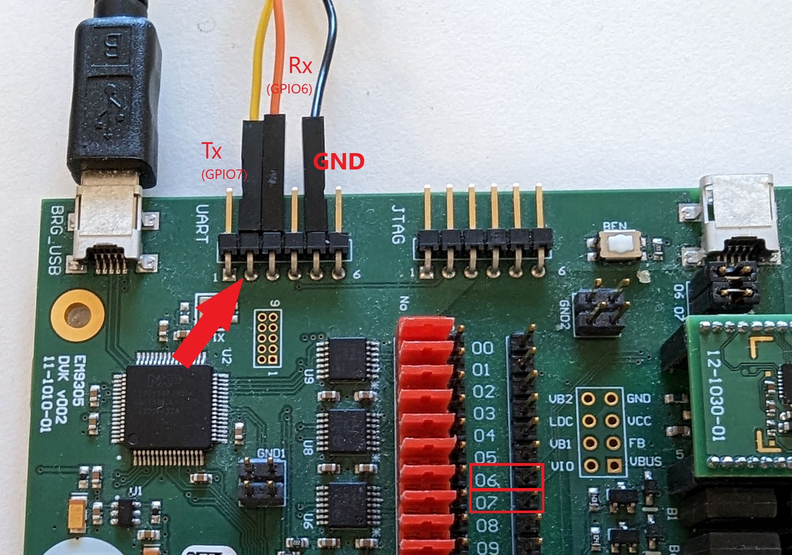
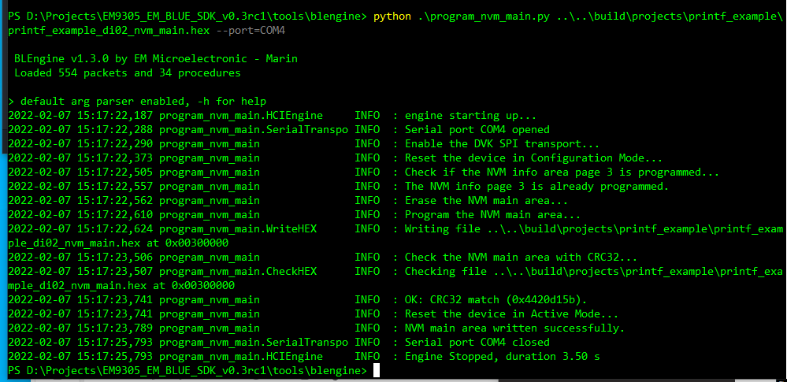
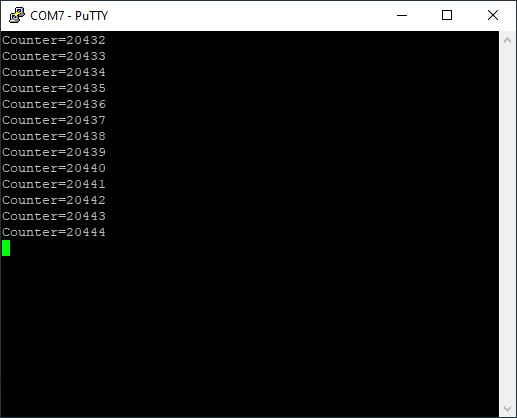

Printf Example
Overview
The purpose of this example is to show how to use the printf library which is mainly used for debugging.
This example simply prints a counter over UART using the printf library. It is possible to reset the counter by pressing any key on the keyboard.
Setup
The input (Rx UART signal) is on GPIO6 and the output (Tx UART signal) is on GPIO7. This signal can be accessed from two header connectors (see picture below).
{kind=link}
You can then connect a USB to UART device to GPIO6 and GPIO7 and use a terminal software (for example docklight, PuTTy, …) to connect to the COM port of your device.
Warning
Double check you connected the jumpers D+(07) and D-(06) on the DVK. The GPIO6 and GPIO7 pins are connected by default to the USB connector.
The printf application example increments a counter every second. This counter is reset when a key of the keyboard is pressed.
Implementation details
This code snippet shows two functions.
The function NVM_ConfigModules() is called each time the CPU starts either from a cold/warm reset or after a period of sleep. It is the place where the GPIO configuration is setup through updating the dedicated global reserved structure gGPIO_Config.
After the execution of the function, this structure will then be used to actually modify the content of the CPU registers. However, it shall be noted that this structure is filled in only once after a reset. If the CPU starts from a sleep period, there is no need to do this configuration again.
This is achieved by calling the function PML_DidBootFromSleep() which returns true if the CPU execution resumes from a sleep period, and false otherwise.
// Did the CPU start after a cold/warm reset (and not resuming from a sleep period)?
if(!PML_DidBootFromSleep())
{
// Do any actions if not resuming from sleep period.
}
Note
The ‘PML’ prefix means ‘Power Management Logic’.
Since the structure gGPIO_Config is permanently stored, there is no need to update it after a sleep period because it has been done at startup after a cold/warm reset.
Then, knowing that the GPIO7 is going to be used by the UART, a set of actions need to be done to achieve the right configuration.
First, the GPIO06 and GPIO7 are enabled:
gGPIO_Config.hardwareState.RegGPIOInputEn.r32 = (uint32_t)GPIO_MASK_PIN_6;
gGPIO_Config.hardwareState.RegGPIOOutputEn.r32 = (uint32_t)GPIO_MASK_PIN_7;
Note that in this statement, all other GPIOs are disabled.
Second, the TX output is forwarded to GPIO7:
gGPIO_Config.hardwareState.RegGPIOOutSel1.regs.GPIOOutSel7 = (uint8_t)GPIO_PIN_FUNC_OUT_UART_TXD;
and third, the RX input is forwarded to GPIO6:
gGPIO_Config.hardwareState.RegGPIOInpSel1.regs.GPIOInSelUARTRDX = (uint8_t)GPIO_PIN_UART_RXD;
And that’s it for the NVM_ConfigModules() function.
The function NVM_ApplicationEntry() is the entry point of the customer application.
This is where the application logic takes place and it is split in two parts.
The first part contains some initializations including the initializion of the printf library by a call to the printf_init() function. It also execute the UART_ReceiveDataWithCallback() function to detect if some data are received on the UART line.
Then comes the infinite loop:
// Infinite loop
while(true)
{
//
}
In this example, in the main loop, the CPU actively waits for one second by calling the following function:
// Wait 1 sec
COMMON_WaitUs(1000000);
This is an active wait, meaning that the CPU is not put into sleep mode in this specific case. After one second, the CPU will send the message “counter=XXXXX” to the TX line. Then, it will loop again.
If during these loops, a key is pressed on the keyboard, the callback given in UART_ReceiveDataWithCallback() parameter is called. The counter is then reset and the UART_ReceiveDataWithCallback() function is called again to detect some new data on the UART line.
Note
As this example is not going to sleep and the JTAG is enabled, you can start the debugger and debug it.
Build
The build target of this example is: printf_example
cd <sdk>\build
cmake --build . --target printf_example
Run
To program and run the example:
cd <sdk>\tools\blengine
python blengine_cli.py --port COMYY run emsystem_prog ..\..\build\projects\printf_example\printf_example.ihex --progress
With YY = the COM port number used to program your DVK (the one connected to BRG_USB port).
Then, launch your terminal software and connect to the DVK (UART port) using the second COM port dynamically created at connection. Note that this port is different than the one used to program the application into the flash memory.
Once you have identified the right COM port, then in your terminal software, configure the speed to be 115200 bit/s and open the connection.
You will then see the counter messages on your terminal like shown in screenshot below.
